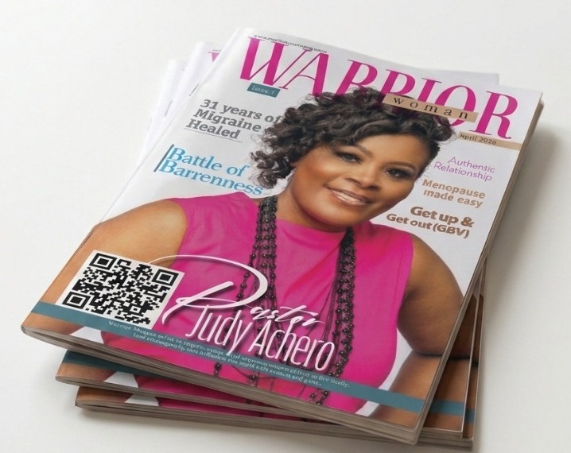

FREE · R0 Digital edition · April 2026
Warrior Woman Magazine
Issue 1
A magazine for women of faith, filled with stories of courage, inspiring testimonies, practical encouragement and conversations that matter.
R0Free download
Download free PDF
PDF · 48 pages · No payment required